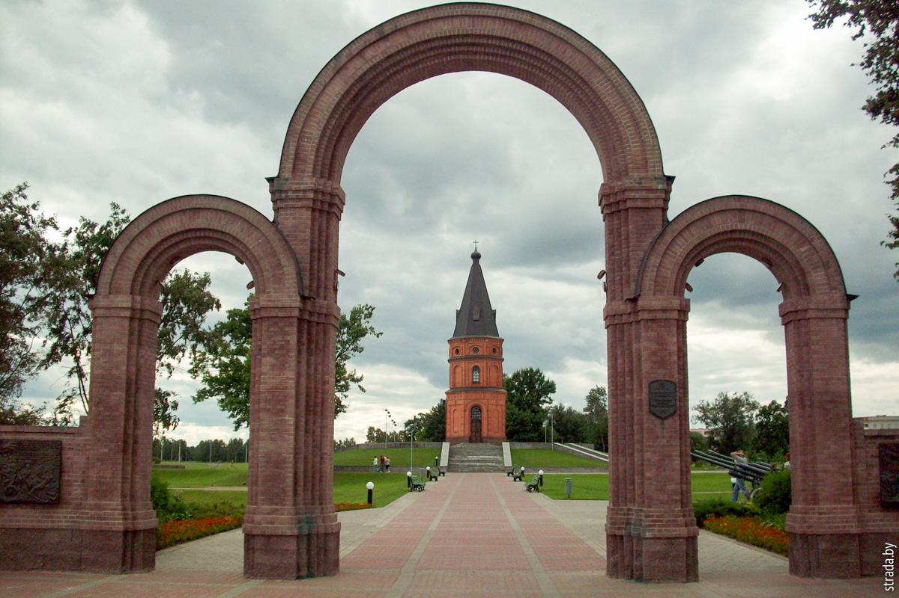

.
Буйничское поле

В пригороде Могилева, вблизи деревни Буйничи, расположен комплекс,
посвященный Великой Отечественной войне, – «Буйничское поле». В 1941 году
в этом месте проходила линия советской обороны и шла сложная борьба за
Могилев. Бои за Могилев начались 10 июля. Немецкие войска рассчитывали с
ходу занять областной центр, и, наступая, направили на Буйничское поле 70
танков. Основной бой длился 14 часов. Советским солдатам удалось сжечь 39
танков и отбить несколько атак. Оборона Могилева продолжалась до 22 июля.
Немецкие командиры не решились сообщить Гитлеру о неудачах на подходе к
Могилеву и доложили, что наступление прошло успешно. В могилевском музее
вам обязательно расскажут историю о том, как один из гитлеровских офицеров
отправился изучать могилевские рестораны, думая, что город давно взят, и
был захвачен советскими солдатами. Буйничское поле стало символом отваги
советских солдат. Во время наступления немецких войск здесь присутствовал
корреспондент газеты «Известия» писатель Константин Симонов. Легендарное
сражение он описал в романе «Живые и мертвые», а свой прах завещал
развеять именно над Буйничским полем. Мемориальный комплекс «Буйничское
поле» появился на месте сражения в 1995 году. К настоящему времени в
состав Мемориального комплекса входят: мемориальная часовня, мраморный
знак, посвященный воинам 388-го стрелкового, 340-го артиллерийского полков
и народным ополченцам; обелиск на братской могиле воинов 388-го
стрелкового, 340-го артиллерийского полков и народных ополченцев, погибших
в боях с немецко-фашистскими захватчиками 12-13 июля 1941 г. (Буйничское
поле, железнодорожный переезд); обелиск на могиле неизвестного
красноармейца 172-й дивизии, который погиб во время обороны Могилева
(район авторемонтного завода); образцы боевой техники: немецкий танк Т-3,
советский танк ИС-2, зенитная установка КС-19, 5 орудий; мемориальный
знак, посвященный памяти Константина Симонова.